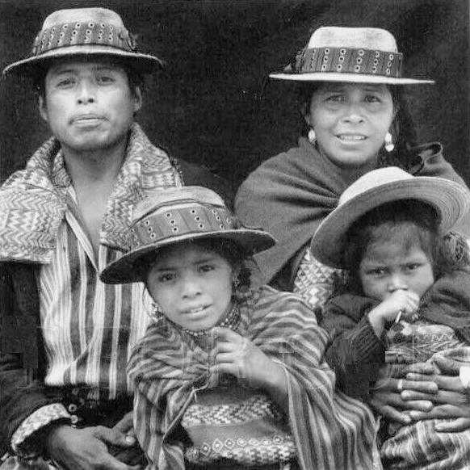

Colapso y Recuperación
Después de alcanzar su punto más bajo alrededor de 1680, la población nativa de las tierras altas de Cuchumatán comenzó un lento proceso de recuperación. Sin embargo, esta recuperación demográfica fue esporádica e intermitente debido a los recurrentes brotes de enfermedades epidémicas.
"El eclipse del poder quiché y el resurgimiento concomitante de los pueblos antes dominados por los quichés a través de la fuerza de las armas al estatus de naciones autodeterminadas dio lugar a la fragmentación política de las tierras altas de Guatemala en los años inmediatamente anteriores a la conquista por parte de España." (Lovell, Conquista y Supervivencia en la Guatemala Colonial, 55)
A pesar de los desafíos planteados por las enfermedades y la explotación económica, la población indígena logró adaptarse y sobrevivir, preservando muchos aspectos de su identidad cultural y forma de vida tradicional.

Familia maya en traje tradicional